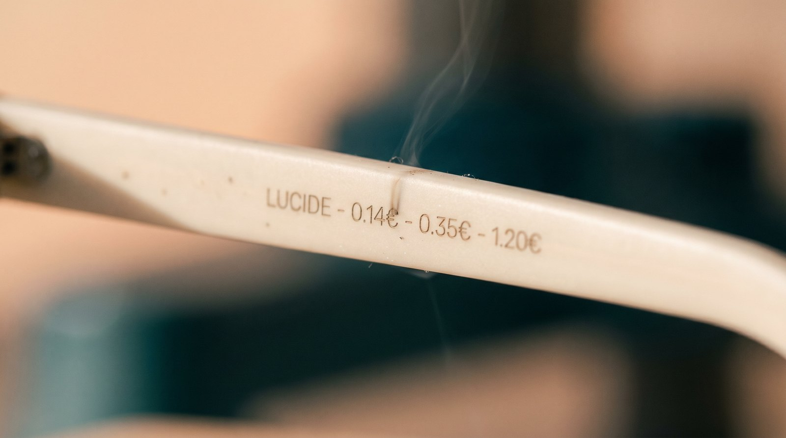

LUCIDE n'est pas une marque de plus. C'est un refus : celui de la surenchère. Voici nos engagements, écrits noir sur blanc — et gravés dans la matière.
Dans la cosmétique, on a appris à se méfier des promesses : l'anti-âge miracle, le pourcentage d'actif qui ne sert à rien, le label qui rassure mais ne prouve rien. La lunette, c'est pareil — en pire. On y paie un nom gravé en gros, une licence, une campagne d'affichage avec une célébrité. Le verre, lui, coûte une fraction du prix. Le reste, c'est de la mise en scène.
Nous avons construit LUCIDE à l'envers de cette logique. Pas pour faire la morale — pour prouver qu'on peut faire autrement : le bon verre, le juste prix, la vérité gravée dedans. Et le démontrer, chiffre par chiffre, à l'intérieur de chaque branche.
Six engagements. On ne demande pas qu'on nous croie : on demande qu'on vérifie.
Le coût réel — matière, verres, façon, transport, marge juste — est gravé au laser à l'intérieur de la branche gauche. Chaque euro a une ligne. Rien n'est caché.
On ne vend aucun « traitement » qui ne sert pas à voir. Pas d'options fantômes, pas de jargon. Si une technologie ne change rien pour vos yeux, elle n'entre pas dans nos verres.
Nous refusons les certifications-décor qui contraignent sans prouver. À la place : cette charte, les fiches techniques complètes, et notre propre cahier de formulation des verres et des matières.
Quatorze pièces. Pas une de trop. On ne lance pas une « collection capsule » tous les mois pour entretenir le manque. On fait peu, on le fait bien, on le garde longtemps.
Vos verres sont dosés à votre vraie vue par des opticiens indépendants — pas par un algorithme pressé. La confiance d'un prescripteur, comme on fait confiance à son pharmacien.
Verres remplaçables, charnières vissées, plaquettes de rechange, garantie sans date de péremption. On répare, on ne remplace pas. On ne jette pas la lumière.

« On voulait une marque qui n'ait rien à cacher. Alors on a tout gravé. »
Comme La Rosée est née du refus de la surenchère cosmétique, LUCIDE est née devant une vitrine d'opticien : trois fois le même verre, trois prix multipliés par le logo. L'évidence a été immédiate — il fallait remettre le prix à l'endroit. Pas un discours, une preuve. Pas un slogan, une gravure. La transparence n'est pas notre argument : c'est notre matière première.
Voir le prix-vérité de L'Aube →L'emblème « Œil-Aube » se lit de trois façons à la fois : un verre, un œil, et un soleil qui se lève sur l'horizon. Un seul trait, gravable partout — sur la branche, l'étui, la chamoisine. La cohérence comme preuve d'honnêteté.
 LUCIDE
LUCIDE LUCIDE
LUCIDE